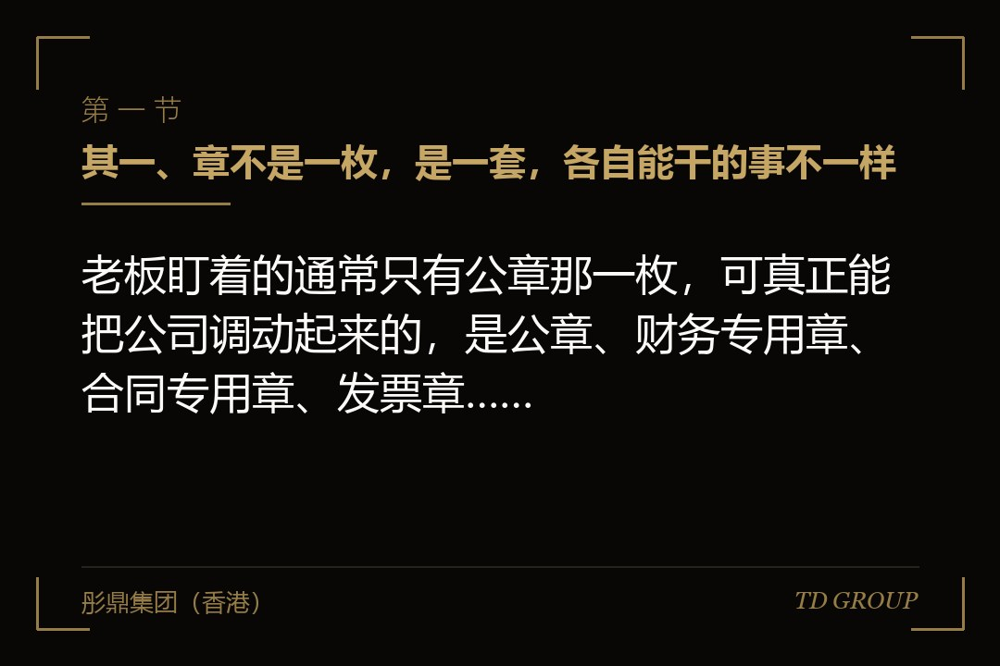
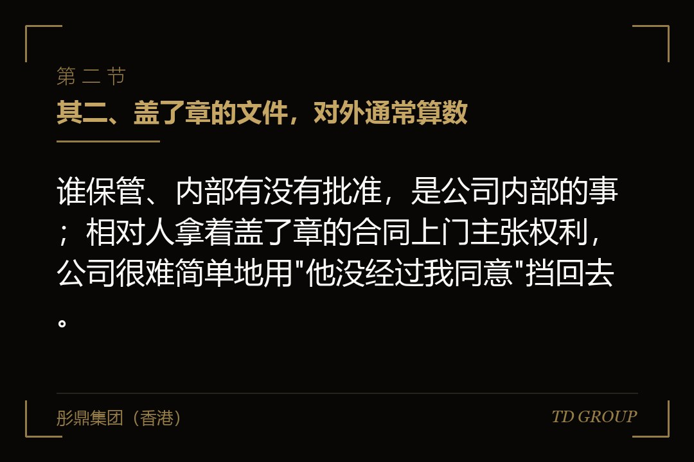
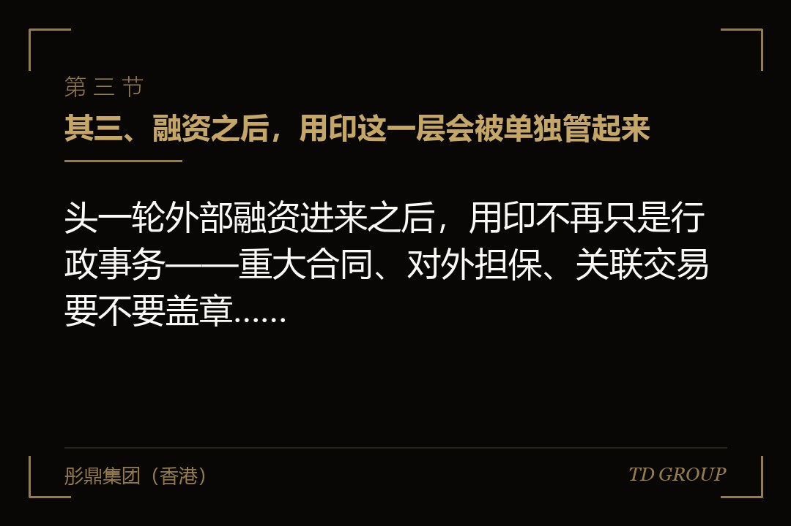

其一、章不是一枚，是一套，各自能干的事不一样

结论先行：老板盯着的通常只有公章那一枚，可真正能把公司调动起来的，是公章、财务专用章、合同专用章、发票章、法定代表人名章连同执照与网银这一整套。
公章管的是公司对外的意思表示，合同、函件、决议、授权书，盖上它就代表公司说了这句话。财务专用章配合银行预留印鉴使用，管的是钱从账上出去这条路。合同专用章的效力范围窄一些，通常只用在业务合同上，不少公司拿它来分流公章的使用频次。
发票章管的是开票，看着最不起眼，可一旦停摆，下游客户拿不到票就不肯付款，收入在账上转不成现金。法定代表人名章更特殊，它对应的是一个自然人的签字，银行开户、变更登记、部分行政审批都要它，而它往往被随手交给了办事的行政人员。
剩下的几样严格说不是章，作用却是一样的：营业执照正本副本、开户许可与银行预留印鉴卡、网银U盾与密钥、税务与社保的申报账号。它们跟章配在一起才构成一套完整的行动能力，缺任何一样，公司都会在某一处卡住。
有家做连锁便利店的公司，老板一直把公章锁在自己办公室，觉得万无一失。后来跟供应商起了争执，对方甩出三份盖着合同专用章的补充协议，都是区域经理签的。他这才知道公司还刻过这么一枚章，登记在册的经办人是两年前离职的那位。
其二、盖了章的文件，对外通常算数

结论先行：谁保管、内部有没有批准，是公司内部的事；相对人拿着盖了章的合同上门主张权利，公司很难简单地用"他没经过我同意"挡回去。
这是全篇最要紧的一句。商业交往里，外部相对人没有办法、也没有义务去核实一家公司内部是谁批准了这件事，他能看见的就是那枚红印。法律上保护交易安全的基本思路，也是让善意的相对人可以信赖这个外观。
所以内外是两套账。对内，用印没走审批是违反公司制度，可以追责、可以索赔、严重的可以报案；对外，这份文件多半仍然要先算数，公司先得对相对人履行，回过头再去找那个盖章的人。这两件事的先后顺序，老板往往是反过来想的。
具体到某一份文件能不能被推翻，要看盖章的人当时有没有代表权或者代理权的外观、相对人知不知情、章是不是伪造的，个案差别很大，最终由司法机关按当时有效的法律与证据认定。但方向上，把希望寄托在事后否认，是一条很不划算的路。
有家做精密注塑的公司，一位股东在离开前用公章签了一份为关联方提供保证的文件。公司在内部会议上宣布这份文件无效，也确实没人批准过。可对方拿着原件找上门时，公司真正能做的，是先应对这笔债，再去追那位股东。对外担保怎么系统清理另有专文，这里只点一句：担保多半就是一枚章盖出来的。
其三、融资之后，用印这一层会被单独管起来

结论先行：头一轮外部融资进来之后，用印不再只是行政事务——重大合同、对外担保、关联交易要不要盖章，往往被写进了需要事先同意的那一类事项里。
投资方的顾虑很直白。钱打进公司之后，它变成了公司账上的资产，而调动这笔资产、让公司对外承担义务，实际的开关就是那几枚章。股权比例保护不了这件事，董事席位也保护不了——决议是慢的，盖章是快的。
落地的写法通常有几种。一种是把用印挂到同意事项上：约定范围内的合同、担保、关联交易，用印之前要先取得董事会或者投资方的书面同意。同意事项清单本身怎么谈另有专文，这里只说结果——用印这一层从此有了一道外部的闸。
另一种是人。投资方委派或者推荐财务负责人，财务专用章与网银权限归到这个人名下，金额较大的付款要两个人以上共同操作。还有一种是共管：章与执照分开保管，钥匙分给不同的人，某一类文件要两方同时到场才能盖。
有家做危废处理的公司，交割前老板对这几条没太在意，觉得不过是走个流程。半年后他要签一笔设备融资租赁，合同金额刚好压在约定线上面一点，来回等同意等了五周，设备厂商那边的排产档期已经过去了。
这些安排本身不算过分，投资方要的是不被绕过去。真正的问题在于，老板签字的时候没有把它换算成经营节奏：一年里有多少笔合同会踩到那条线、每笔要等多久、等不起的那几笔怎么办。
其四、章被扣住的那几天，公司会停在哪些地方
结论先行：章一旦被人拿走，停摆的不是某一件事，而是报税、发薪、签约、投标、办变更这些同时在跑的日常，而重新刻章本身要走一套流程。
最先出问题的通常是钱。银行预留印鉴对不上，付款指令就发不出去；工资、社保、供应商货款、税款，每一样都有时点，误了时点各有各的后果。财务章和网银这两样凑不齐，公司在银行那一头就等于失声。
接着是业务。招投标要盖章的资料一大摞，客户要的合同、发票、履约文件一样都少不了；营业执照正本还要挂在经营场所，副本要拿去办各种手续。少了它们，业务不是慢下来，是直接办不了。
再往后是主体本身。工商变更、银行账户变更、资质延续，这些都要执照原件与相应的章，而它们往往正是被扣住的东西。于是公司陷在一个循环里：想通过变更把局面解开，可解开局面要用的东西就在对方手上。
挂失重刻这条路是有的，但它是一套流程而不是一个动作，要报案或者公告、要出具材料、要重新到银行更换预留印鉴、要通知已经签约的相对人。各地的具体办理要求与时限不同，以属地主管机关当时有效的规定为准。
有家做医疗影像设备的公司，两位股东闹翻，章和执照被其中一方拿走。那一个多月里公司没有倒，但没能按时报税、没能给一家医院开出发票、错过了两个招标。等东西回来的时候，那家医院的采购已经换了别的供应商。
其五、法定代表人这一层：谁在替公司签字
结论先行：法定代表人是登记在册、能直接代表公司对外行为的那个人，他跟实际控制人不是一回事，而他的名章常常被随手交给了办事的人。
这两个身份经常被混为一谈。实际控制人是从股权与支配关系上认定出来的，讲的是这家公司实际听谁的；法定代表人是登记出来的，讲的是谁在法律上替公司签字。实际控制人怎么认定另有专文，这里只强调一点：它们可以是两个人。
当它们真的是两个人时，风险就出来了。法定代表人的名章、证件复印件、银行U盾如果都不在实际控制人这一边，公司对外的很多动作就要看那位登记在册的人配不配合。他配合的时候一切正常，不配合的那一天才知道差别在哪儿。
更麻烦的是变更本身要他配合。更换法定代表人通常要出具决议与相应的申请材料，实务中往往还需要现任者交出执照原件、印章与相关证件。他人在国外、联系不上或者干脆不肯签，这件事就会拖很久。具体办理要求各地不同，以属地主管机关当时有效的规定为准。
有家做同城货运平台的公司，创始人为了省事，让一位早期合伙人挂了法定代表人。后来那位合伙人退出，人去了海外，公司要变更登记、要换银行预留印鉴，前后折腾了小半年。而在那小半年里，对外每一份需要他签字的文件，都要先约时间。
其六、一套该有的用印规矩长什么样
结论先行：好的用印规矩不是把章锁得更紧，而是让每一次盖章都留下痕迹：谁批的、盖在什么文件上、盖了几次、原件去了哪里，事后翻得出来。
起点是用印审批。任何一次盖章之前先有一张审批单，写清文件名称、用途、对方是谁、涉及的金额、由谁申请、由谁批准。审批的层级按金额和事项分开，日常业务合同走部门负责人，涉及担保、关联交易、股权与不动产的事项往上走。
然后是登记台账。每盖一次登记一次，写明时间、文件、页数、盖了几枚、经办人是谁，审批单与台账要互相对得上。这一条看着琐碎，可真起了争议，它往往是能还原当时发生了什么的那份材料，比任何人的记忆都管用。
接下来是分人分处保管。章与营业执照不放在同一个地方，财务专用章与法定代表人名章不由同一个人保管，网银的U盾与支付密码分开在两个人手上。这样做不是不信任谁，是让任何一次越权都需要两个人配合，把偶发的失误挡在门外。
外带用印要另立规矩。文件带出去盖、去对方公司当场签约、章要跟着人出差，这几种情形最容易出事。做法是这一类用印要单独审批、要有另一个人同行、回来当天销账，能用扫描件与快递往返解决的就不带章出门。
电子印章与网银是新的一层。不少公司把实体章管得很严，电子签章的账号密码却存在一台共用的电脑上，网银的操作员、复核员、授权人由同一个人兼着。权限分离在电子这一头同样要做，而且它比实体章更难留下痕迹。
再往后是定期盘点与交接。每季度对一次章的数量与台账，人员离职时把章、U盾、证件与账号一并交接并留下签收记录。开头那家做建筑幕墙的公司，后来做的头一件事就是把章的数量数清楚——他们数出来的比自己以为的多两枚。
其七、分公司与子公司的章：集团里最容易失控的那一层
结论先行：母公司以为管得住的，通常只是自己那几枚章；分公司与子公司各有一套，它们盖出去的东西，责任未必停在那一层，最后还是回到母公司身上。
两者的性质不一样。分公司没有独立的主体资格，它对外签的合同，责任直接落在总公司头上；子公司是独立主体，正常情况下责任由它自己承担，可一旦母公司为它担保、或者出现人财物混同，这道墙就未必挡得住。
实际情况往往比制度上更松。集团扩张的时候，为了让各地能自己办事，章刻了一套又一套，谁保管、能盖什么、金额上限多少，很多都是口头交代。等到要做尽调，把各地的章拉出来清点，数目和用途常常对不上。
审计与尽调对这一层看得很细。合并范围内每一家主体的章有几枚、由谁保管、有没有用印记录、有没有盖出过担保或者承诺函，这些会被逐家问到。答不上来本身就是一个问题，因为它说明母公司对下面的实际控制是松的。
还有一家做连锁便利店的公司，在三个省各设了区域主体。总部规定所有合同要报备，实际上各区域自己刻了合同专用章，报备的只有大单。尽调时抽查出十几份没报备过的租赁合同，其中两份带着到期自动续约与提前退租要赔的条款。
其八、这件事该在什么时候立起来
结论先行：用印规矩要在头一次外部融资之前立好——等到投资方在协议里提要求，创始人就只能被动接受一套别人设计的管法，而那套管法未必贴合公司的经营节奏。
时间差是这样产生的。融资之前立规矩，公司只有创始团队，怎么审批、几个人共管、金额线定在哪儿，都由自己按业务节奏来定，成本几乎只是几张表和一次内部宣讲。融资之后再立，每一条都要跟投资方对，还要解释为什么以前没有。
更实际的一点是，事先有一套跑得顺的用印规矩，反而能把投资方要的那道闸谈得松一些。对方要的是不被绕过去，不是要卡住经营。你能拿出审批单与台账，证明这家公司本来就管得住，金额线和事项范围就有得谈。
该动手时先做的是清点，不是写制度。公司名下一共有几个主体、每个主体有几枚什么章、执照原件在哪里、网银的操作员与授权人分别是谁、法定代表人的名章由谁拿着——把这张底数摸清楚，往往就已经能看出问题在哪儿。华尔街彤鼎俱乐部里有位企业主说过，他公司出争议那阵，最后是靠一本用印台账把事情说清楚的。
这一层跟股权层面的控制权工具是两回事。表决票怎么分、董事会几个席位、一致行动怎么签，那些解决的是决议阶段谁说了算；章解决的是决议之后、甚至没有决议的时候，谁能让公司真的动起来。两层都要有人管，缺哪一层都会在某个时点显出来。
回到开头那家做建筑幕墙的公司。老板后来说过一句话：他花了两年时间跟投资人谈股权比例，谈到小数点后面，却从来没有想过要问一句公司的章一共有几枚。那些在治理上付过一次代价的企业主，说的往往是同一件事——章不是权力的象征，它就是权力本身；外面的世界只认那个红印，不认你们内部谁点过头。